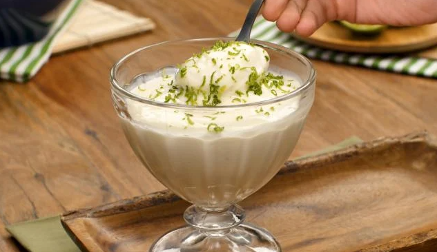

Musse de Limão

Descrição
Se você está procurando uma receita de mousse de limão rápida e fácil, veio ao lugar certo! Essa receita é feita
com suco de limão, sem gelatina e leva apenas 4 ingredientes!
Confira agora mesmo como fazer!
Ingredientes
- 1 Lata de Leite Condensado
- 1 Lata de Creme de Leite
- 1/2 Copo (americano) de Suco Puro de Limão
- Bis de Limão
Modo de Preparo
Tempo Gasto: 10 minutos
- No liquidificador, bata o leite condensado e o creme de leite por 3 minutos.
- Acrescente aos poucos o suco de limão e continue batendo.
- Despeje o mousse em um refratário e leve à geladeira.
- Na hora de servir, triture o bis e coloque por cima do mousse para decorar.